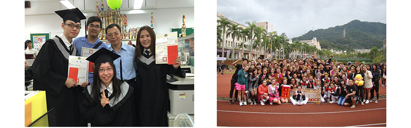
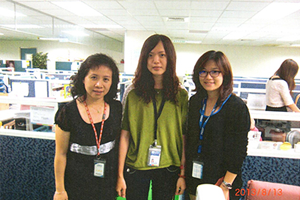
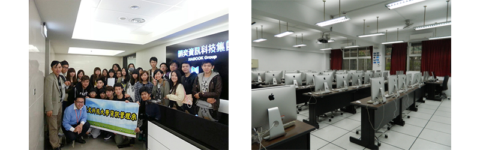
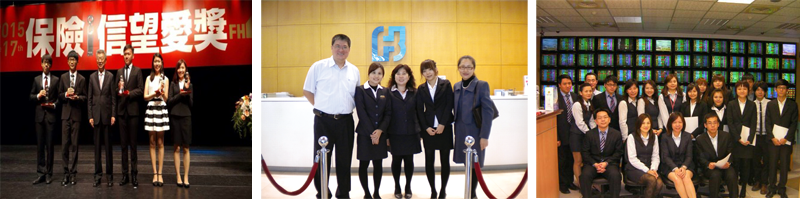
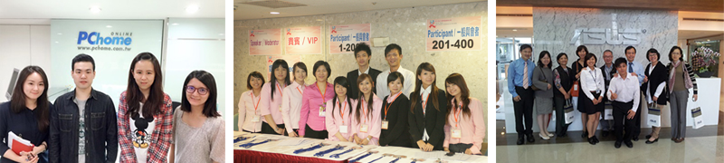
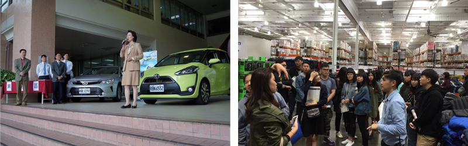
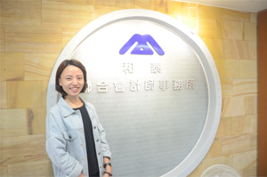

成立於2007年2月1日，目前學院下轄資訊管理系、財務金融系、理財與稅務規劃系、國際貿易系、企業管理系、行銷與流通管理系等六個學術單位，共有96位專任教師與3000餘名學生，為景文科技大學最大的學院。商管學院秉持「創新創意、資源整合、產學合流」的理念，特別強調卓越的教學品質以及提供學生第一流的學習環境，進而培養能夠滿足產業需求之優秀人才。本院雖然沒有悠久的歷史，但是藉由持續不斷地提升教學環境與品質以及進行課程的整合與創新，期望能在最短的時間內成為臺灣首區一指的商管學院。
資訊管理系
本系發展特色如下：
1.邀請國內外專家學者，做一系列專題講演，增加學生新知，擴展國際視野。
2.鼓勵獲取專業證照，並積極指導學生參與校外專業競賽，獲取佳績。
3.對於學生創新性的研究成果，協助提出專利申請，並參與國內及國際之競賽。
4.每學年舉辦全國性或國際性學術研討會，並積極參與學術研究活動。
5.培養具國際視野、創新觀念、務實能度以及完整人格等特質的數位多媒體設計人才。
6.積極爭取與各大企業進行產學合作，透過專題計畫之執行，學以致用。本系曾接受來自教育部、國科會、資策會、勞委會、經濟部及其他公民機構的委託計畫，成效斐然。

資訊管理系-資訊管理組
本系(組)著重身心均衡發展與資管專業人才的培養，配合本校、院目標以及產業需求和發展趨勢，規劃與設計課程。學生經由本系課程和教學資源的投入，使學生具備資訊系統分析、設計、發展與應用、網路安全管理，以及專案管理的專業能力。本組課程規劃以企業電子化與網路安全為主軸，並依此分為兩個模組供學生選擇。課程規劃結合四個專業且具特色的實驗室來培養與推動。課程的進行並透過產學合作教學、就業學程、以及相關計畫的執行，使資源的投入能將目標、課程、實驗室、以及證照與就業，緊密貫穿和整合。

資訊管理系-數位多媒體組
本系(組)著重身心均衡發展與資管專業人才的培養，配合本校、院目標以及產業需求和發展趨勢，規劃與設計課程。經由本系課程和教學資源的投入，使學生能掌握多媒體數位內容產業的創新、應用與管理，展現應用資訊科技於多媒體內容創造之能力，具備投入數位內容產業之就業能力與職場競爭力，以及專案管理的專業能力。本組課程規劃以培育數位多媒體設計與網站規劃管理人才為主軸。課程設計涵蓋「內容創製」、「平台建立」、「實務應用」、與「企劃行銷」四大領域。課程的進行並透過產學合作教學、就業學程、以及相關計畫的執行，使資源的投入能將目標、課程、實驗室、以及證照與就業，緊密貫穿和整合。

財務金融系
本系發展是以『專業素養培育』、『輔導證照取得』與『就業無縫接軌』為首要目標。課程規劃兼顧理論與實務，並有完善的證照取得輔導規劃。專業教學資源與設備有『金融證照考試題庫中心』、『虛擬交易所線上系統』、『XQ全球贏家看盤報價系統』、『財金e化金融交易專業教室』與『財富管理專業教室』，提供師生透過線上全時測驗機制，快速輔導同學準備專業證照考試，亦提供學生即時金融資訊、證券交易實務模擬操作以及專題製作環境。此外，本系大四學生經過校外實習合作企業之甄選，有機會到台北富邦銀行、中國信託商業銀行、錠嵂保險經紀人股份有限公司、大昌證券股份有限公司參與實習，表現優秀的學生有機會獲留任，實現畢業即就業的理想。

國際貿易系
本系於景文創立至今，一直都以培育優秀國際貿易人才為設立宗旨。隨著產業環境的改變、服務貿易興起，以及政府對新興服務業的鼓勵，服務業優質人力的需求日增。網路與資訊科技的進步，也改變傳統國際貿易的經營模式。有鑑於此，本系訂定發展目標如下：培育具備國際經貿、電子化企業經營、外語與電腦相關技能與知識，能為中小型企業所用之國際商品與服務貿易的人才。此外，結合本校特色的系所資源培育跨領域人才，也是本系發展重點。自100年度起，強化服務管理人才培訓。將培育重點從服務貿易中之會展人才培育，延伸增設具備外貿知識之觀光餐旅人才的培訓。

企業管理系
本系辦學特色強調人際關係與企業倫理道德培養，使學生成為未來成功的經營管理者；因應未來國際化、全球化之需求，除專業科目外，亦注重語文、電腦資訊之能力，並致力推廣國際證照考取。透過教授企業行銷、人力資源、生產管理、財務管理之學術理論，並佐以個案分析、電子商務、專題研究、企業經營模擬等實務課程，培養學生具獨立思考及解決問題之能力，並具備創意創新能力及專業領導能力，陶冶團隊精神與敬業樂群精神，以培育實用專業管理人才為宗旨。
行銷與流通管理系
本系發展特色如下：
1.本系教學目標為培養具備專業能力、職業道德及敬業態度之行銷與流通之專業技術人才。由於本校除擁有堅強的商管師資外，並有專業的餐旅師資，結合學校既有的優勢與資源，可培養跨領域行銷企劃與流通人才，以及連鎖餐飲門市管理人員，可提升學生之職場競爭力。
2.結合理論與實務之教學，加強個案討論、企業參訪、創新/創業或專題競賽。
3.實施校外實習制度。

理財與稅務規劃系
本系發展特色如下：
1.課程與證照結合，創造學生擁有「畢業即就業」的機會。
2.稅務規劃模組方面，輔導同學報考記帳士及中華財政學會稅務類證照考試。理財規劃模組方面，鼓勵學生取得金融、保險、證券類相關證照。
3.保險與信託相關法規與實務之選修課程要求學生報考人身保險與信託業務員證照，並提供學生至保險公司進行實務學習的機會。
4.與新店、中和等多家稽徵所簽訂建教合作契約，共同推展租稅教育活動，每年五月綜合所得稅申報期間派學生至各稽徵所服務實習，累積學生租稅申報及稅務規劃管理的能力。
5.與多家會計師事務所與記帳士事務所簽訂建教合作契約，以提升學生申報營業稅、營利事業所得稅以及會計帳務處理之實務操作能力。

大四課程提供同學於暑期或全學年至與本系簽立建教合作之實習單位。